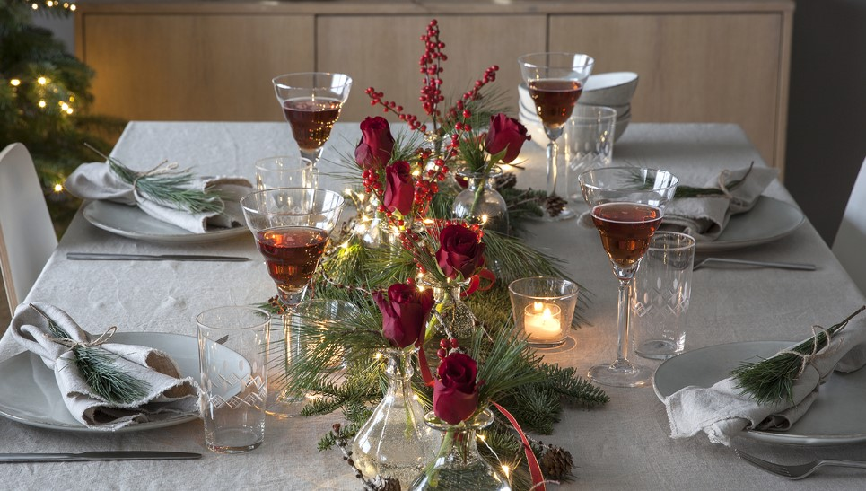
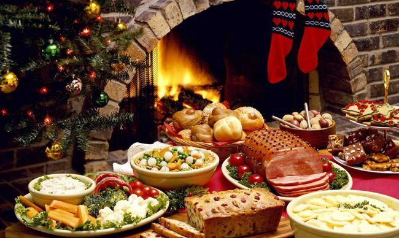

Julebord
Julebordet på Eikely hotell er en tradisjonell opplevelse.
Det skal være velfylt julebordsbuffet med et bredt utvalg av kalde -og varme retter, desserter og
kaker fra konditoriet, fengende dansemusikk, julequiz og underholdning.
Show
I år kommer liveband Stage Dolls, Rydell & Quick, Vassendgutane, Yang-Breakers og Staut.
- Fredag 16. November: Stage Dolls
Lørdag 17. November: Stage Dolls
- Fredag 23. November: Afterski: Rydell & Quick
Lørdag 24. November: Afterski: Rydell & Quick
- Fredag 30. November: Yang-Breakers
Lørdag 01. Desember: Yang-Breakers
- Fredag 07. Desember: Vassendgutane
Lørdag 08. Desember: Vassendgutane
- Lørdag 15. Desember: Staut

